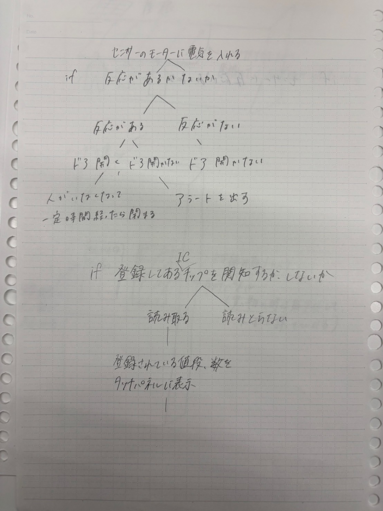
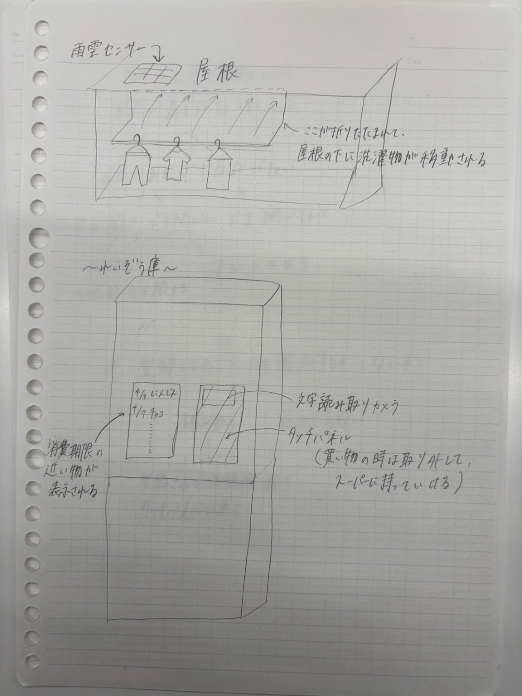

プログラミング

①プログラミングで動かせるもの
オーブン、自動改札、リモコン、ユニクロのレジ、エアコン、エスカレーター、
お寿司のレーン、ペットカメラ、自動ドア、自動車、トイレ、電子レンジ、
ミキサー、イヤホン、ヘッドホン、料理運びロボット、など

自動ドア
センサーのモーターに電源を入れる
↓
センサーに反応あり → ドアを開く → 反応がなくなって一定時間経過したら閉まる
センサーに反応なし → ドアを開かない
レジ
センサーを起動する
↓
かごが置かれる
↓
センサーにICチップの反応あり → 登録されている番号を一から照らし合わせる → 番号が一致する →
商品をすべて読み取るまで繰り返す → 支払方法を選んでもらう
センサーに反応なし → 読み取らない

プログラミングのアイデア
①自動で洗濯物を雨から防ぐ
センサーで雨を感知して、自動で屋根が出てくる
↑外出中に雨が降った場合に洗濯物が濡れない
②消費期限把握冷蔵庫
食材の消費期限を冷蔵庫に記録し、期限が近くなったものをお知らせしてくれる
料理レシピサイトとつなげてその食材を使ったレシピを提案してくれる機能もついていたら便利